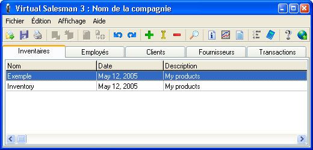

Pour plus d'information visitez mon site web http://www.marcandre.info
ou écrivez-moi à marc@marcandre.info
Copyright ©1998-2005 Marc-andré Lamothe.
Le Vendeur Virtuel est une nouvelle génération de logiciel de facturation destiné aux petites et moyennes entreprises ainsi qu'aux particuliers. Il a été conçu pour vous permettre de faire de la facturation ainsi que de la gestion d'inventaire, il ne vous permet donc pas de faire de la comptabilité. Cette spécialisation le rend donc très rapide, versatile et simple à utiliser.
Il permet une gestion avancée des inventaires, employés, clients et fournisseurs. De plus il est possible de créer et d'utiliser plusieures compagnies avec le même logiciel. Il offre une très bonne alternative à la facturation faite à la main ou avec des tableurs tel que Excel puisqu'il permet l'automatisation des procédures de facturation et de gestion d'inventaire. Vous pouvez aussi utilisé vos inventaires en ligne grâce à sont module web, ce qui permet à clients d'avoir directement accès à tout vos produits et à leur prix les plus récents.
Le Vendeur Virtuel est le fruit de 6 ans de travail et de recherche. Ce programme à débuter comme alternative à une page web qui permettais la création d'une soumission en ligne pour l'achat d'un ordinateur. Programmée en C++ la première version n'offrais gère plus que la page web, avec des menus déroulants prédéfinis et aucune flexibilité. Puis vint la version 2.0 avec des listes dynamiques et quelques nouvelles fonctionalités. Finallement en Janvier 2000 commença le dévellopement de la version 3.0, qui devait être la première version totalement polyvalente et flexible du logiciel.
Pour la version 3.0 tout le code à été ré-écris au complet, mais lorsque tout étais presque fini des problèmes sont survenus avec l'allocation de mémoire en C++ et donc j'ai décider de changer pour le language pascal avec Borland Delphi à la place du C++ avec Borland C++ Builder 5.0. Tout dû être ré-écris de nouveau, mais sans problèmes cette fois-ci et la version 3.0 à vue le jour le 3 Juin 2003.
Jusque là le Vendeur Virtuel étais toujours composer de deux modules, un de gestion et un de vente, mais avec la version 3.0 est survenus des problèmes de consistance données car le module de vente à dû commencer à écrire dans les fichiers lui aussi pour supporter l'ajout de nouveau clients et la soustraction des quantités vendues, ce qui pouvait causer des pertes de données si, par exemple, le module de gestion enregistre les données qu'il avait lus avant que le module de vente ne les modifient, les modifications du module de vente serais éffacées. Pour cette raison, le 3 Mai 2004 il à été décider que la version 3.1.1 ne serais pas composée de deux modules mais seulement un.
Le Vendeur Virtuel intègre complètement la gestion de toutes les informations de la ou les compagnie(s) dont la mise à jour des listes d'employés, de clients et de fournisseurs ainsi que la création d'inventaires et de transactions.
Voici la fenêtre principale du Vendeur Virtuel :
Son interface est très simple et facile d'utilisation, il suffit de sélectionner un des 5 onglets (Inventaires, Employés, Clients, Fournisseurs ou Transactions) pour pouvoir accèder à toutes les données de votre compagnie dans cette section.
Lorsque vous avez sélectionner un onglet, les boutons Imprimer, Annuler, Refaire, Ajouter, Modifier, Suprimmer et Rechercher n'affecterons que la liste courante, les autres fonctions (tel que Ouvrir et Sauvegarder) sont globales. Vous pouvez aussi modifier le contenu de la section avec les boutons Ajouter, Modifier et Suprimmer pour ajouter, modifier ou suprimmer des items dans la liste. Il est aussi possible de modifier un item en double cliquant dessus. Toutes ces actions peuvent aussi êtres éffectués dans le menu "Fichier" ou "Édition".
La fonction Compagnie (sur la barre d'outil ou dans le menu Affichage) vous donne accès aux informations spécifique à la compagnie :
Il vous est alors possible de modifier les informations sur votre compagnie (nom, adresse, téléphone etc.) et le logo. Vous pouvez aussi changer les valeus locales de la compagnie (taxes, symbôle monétaire, dépots, etc.) dans la page Configuration ainsi que les messages afficher lors de l'impression d'une transaction (soumission, commande ou facture) dans la page Messages.
Lorsque vous Ajoutez ou Modifiez un inventaire dans la fenêtre principale, l'interface change pour le mode inventaire :
Vous pouvez alors modifier le contenu de l'inventaire mais vous ne pouvez plus accéder au sections précédentes tant que vous ne fermez pas l'inventaire. Un inventaire contient une liste de groupes et chaque groupe contient une liste de produit. Lorsque vous sélectionnez un groupe dans la liste de gauche, tout les produits qu'il contient sont afficher dans la liste de droite.
Dans la liste de produits, la collone "Taxé" indique si la taxe seras appliqué sur ce produit lors de la vente. Chaque produit contient aussi une valeur URL qui peut storer une adresse internet qui sera utilisée par le module web lorsqu'il afficheras ce produit sur une page web.
Dans le mode inventaire la fonction "Fermer" devient disponible (sur la barre d'outil ou dans le menu Fichier) pour vous permettre de fermer cet inventaire et de retourner au mode compagnie (principal).
Lorsque vous Ajoutez ou Modifiez une transaction dans la fenêtre principale, l'interface change pour le mode transaction :
Contrairement a l'inventaire, une transaction de contient pas de groupes mais seulement une liste de produits vendus. La quantitée qui est alors afficher ici est celle vendue et non celle en stock (en inventaire). Lorsque vous ajouter un produit à la liste vous pouvez choisir de l'ajouter en tant que "Texte seulement", ce produit sera alors ajouter à la liste mais le prix n'apparaitras pas et ne seras pas non plus ajouter au total de la transaction. Il est aussi possible d'écrire un commentaire pour chaque produit ajouté, il apparaîtra sous le produit lors de l'impression.
Dans le mode transaction la fonction "Propriétées" devient disponible (sur la barre d'outil ou dans le menu Fichier) pour vous permettre d'entrer des donnés spécifique à la transaction:
Vous pouvez alors sélectionner le type de la transaction (soumission, commande ou facture). Le numéro de la transaction seras calculer automatiquement et apparaîtra en dessous. Si cette transaction à déja été sauvegarder avec un type différent alors les numéros des transactions précédentes seront afficher aussi (ex.: vous créer une soumission puis que plus tard vous la modifiez en facture, le numéro de la soumission apparaîtras dans la facture). Le type de la transaction ne peut être modifier que dans un sens, vous pouvez changer une soumission en commande ou en facture, mais pas l'inverse.
Lorsque vous enregistrer une facture une confirmation seras afficher et si vous accepter les quantités des produits vendus seront soustraites de celle en inventaires. De plus une vous ne pouvez pas faire de modification à une facture sauvegardé, sauf si vous activer cette option dans la configuration de la compagnie. Il est aussi nécéssaire de sauvegarder une facture avant de pouvoir l'imprimer.
La fonction Rapports (sur la barre d'outil ou dans le menu Affichage) vous permet de générer des rapports sur les transactions de vote compagnie :
Un rapport est en fait un sommaire des valeurs de plusieurs transactions tel que les totals, clients et produits vendus. Il vous suffit de choisir le type du rapport et une période (vous pouvez entrer les dates manuellement) puis de cliquer sur Générer et le contenu du rapport apparaîtras dans la liste de donnés. Puis vous pouvez imprimer le rapport en cliquant sur le bouton Imprimer. Lorsque vous avez terminer cliquez sur Fermer.
Le module web du Vendeur Virtuel est un programme CGI qui peut être éxécuter sur un serveur web pour afficher le contenu d'un inventaire sur une page web grâce à des balises HTML spéciales. L'utilisation de ce module nécéssite une connaissance de base du language HTML.
CGI signifie Common Gateway Interface, donc un programme CGI est un lien entre l'information et l'utilisateur. Le programme, ou script CGI est exécuté par un serveur HTTP et puis le résultat du programme, le code HTML d'une page web, est envoyer au navigateur internet. Le programme CGI peut donc changé le contenu d'une page web en ajoutant ou suprimmant des informations, cela est appelé une page web dynamique.
Le module web du afficheras de l'information provenant de votre inventaires dans une page web. Le fonctionnement est simple, vous créez une page web dans laquelle vous ajoutez des nouvelles balises spéciales qui, lors de l'affichage de la page, seront lues par le module web et remplacées par l'information demandée. Chaque balise désigne une information spécifique de votre inventaire (nom de produit, prix, quantitée, nom de groupe, etc). Une fois la page terminée il vous devrez avoir accès à un serveur HTTP pour exécuter le module web sur depuis votre navigateur, vous devrez entrer l'adresse de votre serveur, puis le nom du module web avec comme paramètre le nom de la page désirée, alors le module web sera éxécuter par le serveur et il remplaceras les balises spéciales par les informations désirées avant d'envoyer la page à au navigateur pour qu'elle soit afficher. Lisez la section Éxécution plus bas pour plus d'informations.
Une page web qui à été créer avez des commandes spéciale pour le module web est appelée modèle, puisque sans le module web cette page ne peut pas être visionnée correctement et est incomplete.
Voici la liste des balises spéciales que vous pouvez utiliser avec le module web :
<Inventory>
Cette balise est la plus importante. Elle ouvre un inventaire dans le module web. Avant de pouvoir afficher quelques informations sur l'inventaire il doit être ouvert avec cette balise. Le module web ne peut ouvrir d'un fichier inventaire à la fois, si un autre inventaire est ouvert, il seras fermer automatiquement. Cette balise peut aussi servir à afficher des informations sur l'inventaire ouvert, pour cela il n'est pas nécessaire d'inclure l'attribus Name, seul Value est nécessaire si un inventaire à ét&eacte; ouvert avant.
Attribus :
</Inventory>
Cette balise ferme l'inventaire ouvert.
<Group>
Cette balise affiche de l'information sur un groupe de l'inventaire.
Attribus :
<Product>
Cette balise affiche de l'information sur un produit de l'inventaire.
Attribus :
<Table>
Ce n'est pas une nouvelle balise mais de nouveaux attribus permettent d'afficher le contenu d'un inventaire ou d'un groupe entier. Utilisez seulement cette balise avec les nouveaux attribus (sans aucun TH, TR, TD, ou /TABLE), le module web créera les lignes et les colonnes automatiquement. Tous les autres attribus de la balise peuvent être ajouter pour modifier son apparance.
Attribus :
Vous pouvez regarder la source du fichier exemple-fr.html situé dans le dossier "Virtual Salesman\Web" pour avoir un aperçu de la création d'un modèle. Vous pouvez aussi faire fonctionner cet exemple avec l'inventaire "exemple.v3i" inclus. Simplement suivre les étapes de la section "Exécution" plus bas pour faire afficher cet exemple par le module web sur un serveur http.
Pour utiliser le module web il faut tout dabord avoir accès à un serveur http qui permet l'exécution de programme CGI binaires, ensuite il suffit de copier le fichier "VS3.cgi" dans le dossier CGI du serveur (cgi-bin) ainsi que les modèles et les inventaires, il est recommandé de créer un dossier séparer pour les modèles et un pour les inventaires. Dans un navigateur, taper l'adresse du fichier CGI tout en lui passant le nom du modèle désirer en paramètre (ex.: http://www.monsiteweb.com/cgi-bin/VS3.cgi?modeles/webexemple.html). Si le module web ne trouve pas le modèle spécifier un message d'erreur sera affiché. Notez que dans les modèles le nom du fichier inventaire doit être relatif à partir du dossier racine du module, et nom du modèle. Si un modèle tente d'ouvrir un inventaire qui n'est pas trouvable par le module, le module affichera un message d'erreur dans la page à la place de la valeur demandée.
Le module peut recevoir le paramètre par la méthode Get ou Post, Post est recommandé puisque le nom de fichier du modèle n'apparait pas dans l'adresse. Selon le type du serveur, le dossier courrant peut varier, il faut donc demander à l'administrateur réseau pour savoir depuis quel dossier le module vas chercher les fichiers demandées. Pour certain serveur, il cherche depuis la racine, donc "VS3.cgi?webexemple.html" chercheras webexemple.html dans le dossier racine, même si le module est situé dans le dossier cgi-bin (sur Apache il cherche depuis cgi-bin).
Le Vendeur Virtuel store toute l'information de votre compagnie dans un dossier unique, à l'intérieur on retrouve le fichier contenant les informations de la compagnie ainsi que les fichiers d'inventaires et de transactions de la compagnie. Lors de la création d'une nouvelle compagnie vous devrez spécifier le nom de ce dossier. Il est donc très facile d'éffectuer une copie de sauvegarde de votre compagnie en copiant tout le dossier et son contenu sur une disquette ou en le compressant à l'aide de programmes comme WinZip.
Tout les fichiers utilisés par le Vendeur Virtuel sont enregistrés avec une encryption de 32bits à clé multiples. Ce qui empêche la modification des fichiers par un autre logiciel et rendant ainsi toutes les données de votre compagnie totalement sécuritaires.
Pour toute autre information, question ou commentaire, vous pouvez me contacter par courriel à marc@marcandre.info.
Merci d'utiliser le Vendeur Virtuel 3.